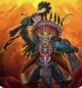

Le Panthéon Grec

La mythologie grecque, c'est-à-dire l'ensemble organisé des mythes provenant de la Grèce antique, se développe au cours d'une très longue période allant de la civilisation mycénienne jusqu'à la domination romaine. La rencontre entre les Grecs et les Romains coïncide avec celle de la mythologie grecque et de la mythologie romaine : la première exerce une forte influence sur la seconde, qui ne s'y réduit pas pour autant. Longtemps après la disparition des religions grecque et romaine, la mythologie grecque est utilisée comme sujet d'inspiration par les artistes, et continue à l'être de nos jours. La mythologie grecque nous est parvenue grâce à un vaste ensemble de textes dont les plus anciens sont les épopées d'Homère et les poèmes d'Hésiode, principalement la Théogonie, mais aussi par les arts picturaux comme la céramique ou par les monuments sacrés. L'ensemble de ces sources présente des généalogies et des récits qui forment un système doté d'une cohérence limitée. Les mythes grecs témoignent de la représentation que les anciens Grecs se faisaient du monde. Néanmoins, le statut de la mythologie grecque est complexe, car la mythologie dépasse le cadre de la religion. Les personnages et les événements mythiques rapportés par la tradition étaient pour les Grecs, du moins dans leurs grandes lignes, des réalités historiques relevant d'un passé lointain et servaient donc de base de travail aux historiens antiques. Dans le même temps, la mythologie fournit une ample source d'inspiration à la littérature et aux arts grecs antiques. (En savoir plus) (retour en haut de la page)
Le Panthéon Romain
La mythologie romaine ou latine est l'ensemble des légendes et des mythes de la Rome antique. D'origine indo-européenne, la mythologie romaine a emprunté au fil des siècles des conceptions religieuses et culturelles aux pays qui ont été peu à peu intégrés dans la sphère de Rome : la Grèce, l'Égypte, la Syrie, la Gaule, etc. Les Romains se sont approprié puis ont adapté ces mythologies pour créer un ensemble syncrétique qui se manifeste dans la religion romaine. La majorité des divinités du panthéon romain a très tôt subi l'influence de la Grèce antique et les divinités locales (ou « indigètes »), à quelques rares exceptions, ont souvent été assimilées à leurs homologues grecs. Pour cette raison, les articles consacrés aux dieux romains sont traités avec leurs équivalents grecs. Rome ayant largement assimilé la culture hellénistique, il est difficile de cerner les croyances des premiers Romains. Pourtant, les dieux de Rome ont des noms originaux qui les différencient de leurs homologues grecs : certes, à l'époque impériale, de nombreux dieux romains ont absorbé beaucoup d'attributs de dieux grecs ; néanmoins, l'étude minutieuse des noms romains de ces dieux ainsi que des cultes qui leur sont liés permet parfois de retrouver la nature première de ces anciennes divinités, qui étaient à l'origine proprement italiques. Malgré cette assimilation des Dieux romains, certains conservent tout de même des spécificités qui sont propres à leurs origines, en plus de leurs attributs grecs. Si on considère à tort la mythologie romaine comme négligeable par rapport à la mythologie grecque, c'est parce que les mythes romains portent principalement sur l'histoire de Rome, tandis que les mythes grecs sont axés sur les dieux et les héros. Mais malgré l'absence de cosmogonie ou de théogonie d'origine romaine, la mythologie romaine n'en existe pas moins, notamment à travers un grand nombre de récits de fondations de cités. Des chercheurs tels que Georges Dumézil et T. P. Wiseman insistent également sur le fait que les notions de mythe et d'histoire ne sont nullement exclusives l'une de l'autre dans la Rome antique, et qu'il est donc possible de parler de mythologie romaine, même si elle s'est construite en bonne partie sur des récits conçus comme historiques. (En savoir plus) (retour en haut de la page)
Le Panthéon Égyptien
La religion de l'Égypte antique est un système complexe de croyances et de rituels polythéistes qui faisaient partie intégrante de la culture égyptienne antique. Il est centré sur les interactions des Égyptiens avec de nombreuses divinités censées être présentes et contrôler le monde. Des rituels tels que la prière et les offrandes sont fournis aux dieux pour gagner leur faveur. Pratique religieuse formelle centrée sur les pharaons, les dirigeants de l'Égypte, censés posséder des pouvoirs divins en vertu de leurs positions. Ils agissent comme intermédiaires entre leur peuple et les dieux, et sont obligés de soutenir les dieux par des rituels et des offrandes afin qu'ils puissent maintenir la Maât, l'ordre du cosmos, et repousser Isfet, qui est le chaos. L'État consacre d'énormes ressources aux rituels religieux et à la construction de temples. Les individus peuvent interagir avec les dieux à leurs propres fins, en appelant à l'aide par la prière ou en obligeant les dieux à agir par magie. Ces pratiques sont distinctes mais étroitement liées aux rituels et institutions formels. La tradition religieuse populaire est devenue plus importante au cours de l'histoire égyptienne à mesure que le statut du pharaon déclinait. La croyance égyptienne en l'au-delà et l'importance des pratiques funéraires sont évidentes dans les grands efforts déployés pour assurer la survie de leurs âmes après la mort - via la fourniture de tombes, d'objets funéraires et d'offrandes pour préserver les corps et les esprits des défunts. La religion a ses racines dans la préhistoire de l'Égypte et a duré 3 500 ans. Les détails de la croyance religieuse ont changé au fil du temps à mesure que l'importance de certains dieux augmentait et diminuait, et que leurs relations complexes évoluaient. À diverses époques, certains dieux sont devenus prééminents sur les autres, notamment le dieu solaire Rê, le dieu créateur Amon et la déesse mère Isis. Pendant une brève période, dans la théologie promulguée par le pharaon Akhenaton, un dieu unique, Aton, a remplacé le panthéon traditionnel. La religion et la mythologie égyptiennes antiques ont laissé de nombreux écrits et monuments, ainsi que des influences significatives sur les cultures anciennes et modernes. (En savoir plus) (retour en haut de la page)
Le Panthéon Nordique
La mythologie nordique est l'ensemble des mythes provenant d'Europe du Nord (plus particulièrement de la Scandinavie) à la base du système religieux polythéiste pratiqué dans ces régions au haut Moyen Âge avant leur christianisation. Il s'agit d'une variante régionale et historique de la plus vaste mythologie germanique, qui fait elle-même partie de la mythologie conjecturelle indo-européenne dont d'autres variantes sont la mythologie grecque ou encore la mythologie perse, et qui a donné lieu à de nombreuses spéculations pseudo-historiques. Comme les autres, la mythologie nordique met en scène un nombre important de divinités, de créatures fabuleuses et de héros. Pendant des siècles, les mythes nordiques étaient transmis oralement, notamment par la poésie scaldique qui éleva la narration d'épopées mythologiques en une expression artistique. Un certain nombre de ces poèmes mythologiques a été compilé au xiiie siècle dans l'Edda poétique. L'historien islandais chrétien Snorri Sturluson s'est servi de la culture orale ancienne pour rédiger son Edda en Prose au xiiie siècle. Ces sources constituent la majorité de nos connaissances sur cette mythologie, complétées par quelques sagas nordiques (dont la plus importante est la Völsunga saga) et textes evhéméristes (comme la Geste des Danois). Longtemps oubliée, cette mythologie a été redécouverte dès le xviiie siècle avec le courant romantique en Europe. Si ces sources demeurent contestées en raison des différentes influences chrétiennes, elles mettent en lumière un univers très riche et vaste sur les croyances religieuse et l'imaginaire de conteurs ou hérauts nordiques anciennes. Ces légendes nordiques ont pourtant influencé l'histoire de l'ancienne de l'Angleterre, puisque peuplée par les innombrables invasions de l'île (Britannia) le par les Normands et les Saxons. La langue anglo-saxonne est empreinte de racines saxonnes et plus généralement scandinaves. Avec ces invasions qui ont forgé l'île britannique, la sédentarisation des peuples Viking a conduit à la formation d'alliances entres les différents territoires sous leur dominations avec l'Anglie après la christianisation de ce dernier. La Mythologie Nordique marque à quel point la Mythologie faite d'un imaginaire très vaste et variée a influencé la construction de notre civilisation moderne. Ce dont témoignent, les récits des bandes dessinées de Stan Lee et Mark Diko par exemple. Puis la filmographie qui en est issue par l'oeuvre des scénaristes des Marvels. (En savoir plus) (retour en haut de la page)
Le Panthéon Mésopotamienne
>La mythologie mésopotamienne désigne l'ensemble des mythes connus essentiellement par la littérature mésopotamienne, élaborés par les scribes de la Mésopotamie antique. Elle comporte les plus anciens mythes connus qui nous soient parvenus avec ceux de l'Égypte antique. Les spécialistes de la Mésopotamie antique identifient en général comme des mythes les textes dont les protagonistes sont des dieux, en écartant souvent de cet ensemble les épopées, dont les protagonistes sont des personnages humains (des « héros »). Les mythes mésopotamiens ont connu une histoire longue et complexe, pendant plus de deux millénaires, marquée notamment par la prépondérance culturelle des Sumériens au IIIe millénaire av. J.-C., supplantés par la suite par les locuteurs de langue akkadienne (Babyloniens avant tout) qui ont repris l'héritage sumérien et ont poursuivi le développement de la mythologie mésopotamienne. Celle-ci n'est donc pas un ensemble uniforme : il n'existe pas de dogme, et certains questionnements ont pu donner lieu à des mythes donnant des réponses différentes. Elle reflète au moins en partie l'ensemble des croyances des Anciens mésopotamiens sur le cosmos et le monde qui les entourait, ou en tout cas elle est le meilleur moyen de l'approcher. Mais les mythes sont à plusieurs reprises repensés et recomposés par le milieu des élites lettrées mésopotamiennes en fonction d'objectifs idéologiques mouvants, renvoyant souvent à des finalités politiques, qui sont essentielles pour comprendre un bon nombre d'entre eux. Ces mythes mettent en scène les grandes divinités du monde mésopotamien : Enlil, Enki/Ea, Inanna/Ishtar, Ninurta, Marduk, Nergal, An (mythologie), etc. Plusieurs mythes mettent en scène des récits de création et l'organisation du monde et de l'humanité, assignant à ces derniers une place dans l'univers au service des dieux (notamment ceux mettant en scène le dieu Enki : Enki et Ninmah, Enki et l'ordre du monde, Genèse d'Eridu, etc.). D'autres concernent des récits de combats de divinités représentées alors comme les protectrices de l'ordre cosmique, d'autres encore relatent les amours de divinités (notamment le cycle autour de la déesse Inanna et son amant Dumuzi), beaucoup ont un arrière-plan agraire. Si beaucoup de mythes sont courts et développent un propos court, souvent plusieurs thèmes se retrouvent dans un même texte, et dès les époques anciennes certains mythes écrits en sumérien développent des récits longs et complexes, comme la Descente d'Inanna aux Enfers qui inaugure la tradition antique des récits de voyage dans le monde infernal, et le Lugal-e qui raconte les exploits guerriers et démiurgiques du dieu Ninurta. Des mythes babyloniens des origines plus longs brassent plusieurs thèmes regroupés au sein d'un discours cohérent : Atrahasis ou Mythe du Supersage qui traite de la création de l'humanité et aborde le mythe du Déluge, l’Épopée de la Création (Enūma eliš) qui raconte comment le dieu babylonien Marduk est devenu roi des dieux et a créé le Monde et l'humanité. (En savoir plus) (retour en haut de la page)
Le Panthéon Dace
Quoi qu'il en soit, la religion dace était polythéiste, mais un prophète nommé Zalmoxis, y avait introduit le culte d'une divinité suprême, Gebeleizis, l'idée de l'immortalité de l'âme et un culte à mystères, d'inspiration pythagoricienne, volontiers adopté par les polistes et tarabostes (aristocrates) Daces. (En savoir plus) (retour en haut de la page)
Le Panthéon Hindou
La mythologie hindoue regroupe un grand nombre de récits principalement issus de la littérature sanskrite, en particulier les épopées du Mahabharata et du Ramayana, les Puranas et les Vedas. La littérature tamoule ancienne et les textes en autres langues fournissent une littérature abondante. Les textes de la mythologie hindoue détaillent une époque ancienne où vivaient des divinités, animaux et démons légendaires. Ils offrent une cosmogonie débutant par le barattage de la mer de lait, et de nombreux récits de batailles, avec des cycles de création et de dissolution, ou Pralaya. Ces textes sont entrecoupés de discours philosophiques et moraux. La mythologie hindoue compte de très nombreuses divinités, souvent liées à un ou plusieurs éléments. La trinité, ou Trimūrti, se compose du dieu créateur Brahma, du dieu du maintien Vishnu et du dieu destructeur Shiva, qui influencent le destin de l'humanité. La notion de cycle est très présente à travers le manvantara, composé de quatre yugas, des âges qui se succèdent en suivant la dégradation morale et physique de l'espèce humaine. La mythologie hindoue forme la base du Védisme, puis de l'Hindouisme. Elle influence la philosophie indienne et d'autres religions, comme le Bouddhisme et le Jaïnisme. Le comparatisme indo-européen a révélé de nombreux points communs entre cette mythologie et celle des peuples indo-européens. (En savoir plus) (retour en haut de la page)
Le Panthéon Maya
À l'époque postclassique, le panthéon maya comptait un grand nombre de divinités. Cette prolifération s’explique en partie par le fait que chacune des divinités se présentait sous des aspects multiples. Certaines pouvaient se présenter sous une forme masculine ou féminine, ou encore sous une forme jeune ou âgée. Chaque dieu représentant un corps céleste possédait dans le monde souterrain un visage différent qui se révélait chaque soir à sa « mort ». Une divinité pouvait changer d'aspect selon la direction (nord, sud, ouest, est, centre), cet aspect étant lié à une couleur. À la fin du xixe siècle, le mayaniste Paul Schellhas entreprit d'explorer l'iconographie foisonnante des codex de Dresde, de Paris et de Madrid. De cette étude il dégagea un certain nombre de divinités. La connaissance de l'écriture maya en était encore à ses balbutiements. Schellhas choisit donc prudemment de désigner chacune de ces divinités par une lettre, de A à P. les mayanistes sont actuellement loin d'être d'accord sur les concordances entre ces divinités et les noms de divinités cités par Diego de Landa ou les Chilam Balam. Si l'on excepte quelques points de détails, la classification de Schellhas continue donc à être employée dans les études mayas. (En savoir plus) (retour en haut de la page)
Le Panthéon Inca
es Incas se veulent être les fils du Soleil appelé Inti en quechua. Pour leur contemporains, les victoires militaires et la politique éclairée des souverains incas semblent confirmer cette origine merveilleuse. Les Incas imposent donc le culte du Soleil comme culte officiel dans l'empire : l'idole solaire côtoiera la myriade de divinités adorées dans l'empire. Il ne s'agit pas pour autant d'un culte monothéiste mais plutôt d'un animisme d'État. Pour instituer le culte, les Incas bâtissent des temples dédiés principalement au Soleil. Le plus célèbre de tous est le Coricancha, temple du Soleil de Cuzco. Ce temple, principal dans l'empire, servait aussi de lieu de culte à d'autres entités divines comme Mama Quilla, la Lune et Illapa divinité de la foudre, de l'éclair et du tonnerre. (En savoir plus) (retour en haut de la page)
Le Panthéon Aztèque
La mythologie aztèque (ou mythologie mexica) est l'ensemble des mythes sur lesquels reposait la religion aztèque. Elle partage de nombreux éléments d'autres anciennes mythologies mésoaméricaines mais elle s'en distingue en particulier par la place prépondérante du dieu tribal originel (selon le Codex de Florence) des Mexicas, Huitzilopochtli, dieu de la guerre et du soleil, dont les Aztèques se considéraient comme le peuple élu, chargé d'assurer la marche du soleil en le nourrissant par les sacrifices. Ce sentiment avait été renforcé par la réforme sociale et religieuse de Tlacaelel sous le règne des empereurs Itzcoatl, Moctezuma Ier et Axayacatl au milieu du xve siècle. Outre la croyance en ce dieu principal, la mythologie aztèque, comme toutes les autres mythologies amérindiennes, se caractérise par un polythéisme illimité et strictement fonctionnaliste, c’est-à-dire que les dieux, voués à la conservation du monde, sont affectés à des tâches précises d'assistance aux hommes. Contrairement aux philosophies moralisatrices, la mythologie aztèque n'est pas basée sur la problématique du paradis et de l'enfer ou du bien et du mal. De même que les autres mythologies mésoaméricaines, elle s'articule autour d'une dualité universelle, la vie et la mort incarnant deux pôles complémentaires plutôt qu'opposés de l'existence humaine et de la création. (En savoir plus) (retour en haut de la page)
